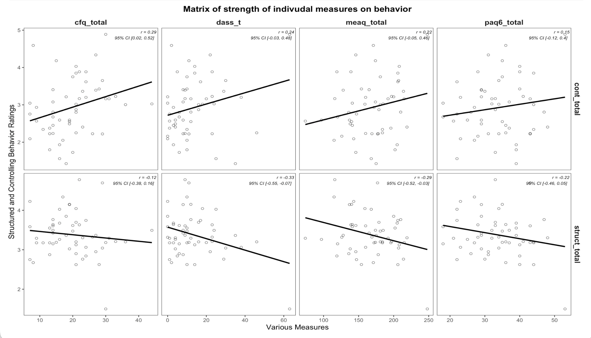

Quantitative Analysis, Spatial Modeling & Machine Learning
My name is Zenobia Calhoun. I am a Statistical & Data Sciences major at Smith College, graduating in May 2028. I am passionate about precise statistical modeling and its real world applications, including machine learning.
Academic & Career Goals
GPA: 3.87/4.00
Relevant Coursework: Statistical Methods for Undergraduates (SDS 201), Introduction to Data Science (SDS 192), Linear Algebra (MTH 211), Introduction to Computer Science (CSC 110), Multiple Regression (SDS 291), Programming for Data Science in Python (SDS 270)
Long-Term Vision
Develop automated open-data processing systems that support sustainable urban infrastructure, housing accessibility, and public transportation optimization.
Technical Skills
Languages & Libraries
- Python
- R
- SQL
- Bash
- HTML/CSS
- JavaScript React
- MatLab
Skills
- Tidyverse / Leaflet
- Pandas / Scikit-Learn
- GeoPandas / SF
- Git / GitHub
- Streamlit
Featured Projects
1. Outfit Recommender using Tensor Decomposition & Low-Rank Approximation
I built an outfit recommender using a sparse matrix of 300 existing outfits. The program filters the data set for seasonal appropriateness, and then uses LRA to return the most likely new combinations. Currently building a full-stack web application to display the project.
Skills: Python NumPy, Pandas, TensorLy, JavaScript React, CSS, SQL
Select a season (1-4) to query the Tucker Tensor Decomposition model and generate top clothing combinations based on low-rank approximation confidence scores.
Select a season number above and click "Run Tensor Model" to display recommendations...
2. SHINE Clinical Trial
Ran independent project on longitudinal clinical trial data, identifying strongest predictors for parenting styles in families with anxious children.
Skills: Analysis Design, Sensitivity Analysis, VIFs, ANOVA, Hypothesis Testing

3. NYC Subsidized Housing and Public Transportation Access
Cleaned and joined open source data sets to calculate the distance from nearest subway stop to NYC housing projects with different proportions of low income units.
Tools: Python (PANDAS, NumPy, SciPy: KDTree), R (dplyr, tidyverse), HTML (interactive graph elements)